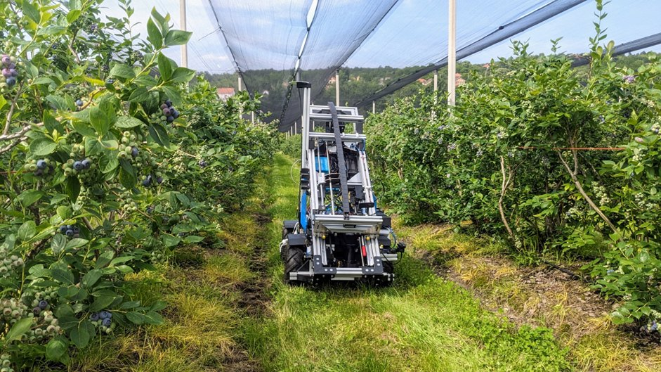
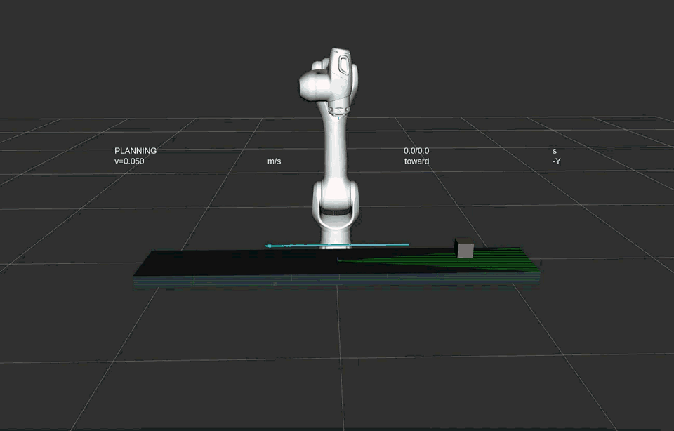
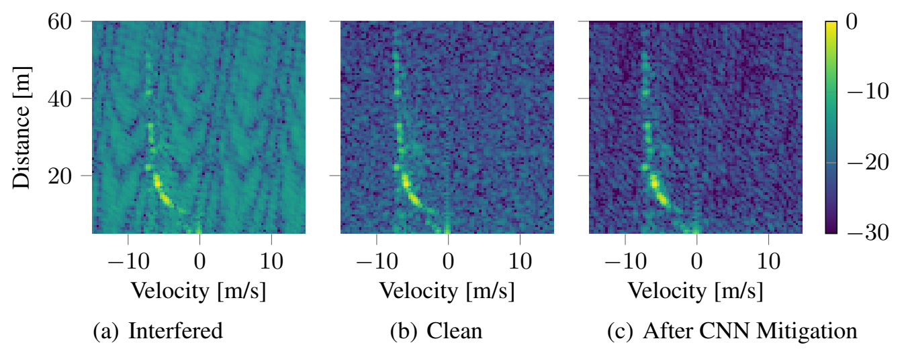
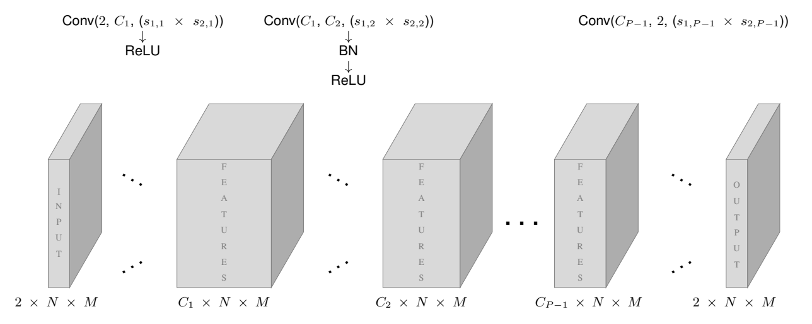

Stanislav Ceman
Research portfolio
I’m a second-year master’s student in mechatronics, machine vision, and AI at Université Paris-Saclay. I earned my bachelor’s in electrical engineering at the University of Belgrade, specializing in signals and systems. My robotics research has taken me from field robot routing to edge vision and manipulation.
I’m an avid reader of research on physical AI and inference optimization, especially world models, vision-language-action models, and lower-power robotics. Additionally, I’m a fan of open source.

In progress
Transformable wheel-leg robot
Our team is developing a transformable wheel-leg robot end to end, from the wheel-leg mechanism, actuators, LiDAR, and motion sensors to the controller that decides when to roll or step over obstacles. We plan to train a world-model-based controller in MuJoCo, deploy it on the physical robot, and use logged sensor and actuator data to adapt it to real-world dynamics. We’ll benchmark the learned controller against a hand-coded switching policy on the same obstacle courses.
ETF Palace of Science, Belgrade, Serbia
MAiRA Conveyor
I developed a conveyor-picking system around a seven-degree-of-freedom NEURA MAiRA-M arm, which I controlled through ROS 2. I configured the physical conveyor’s PLC in Schneider EcoStruxure Machine Expert and used OPC UA to send start, stop, and speed commands to its Altivar 320 motor drive.
The picking design starts with a camera locating the object upstream. The planner uses belt speed to predict its position, then adapts Wang et al.’s pyramid-shaped search to find a point the arm and object can reach at the same time. MoveIt computes the arm motion, and the RViz demo shows the arm matching the belt speed, grasping, and lifting the object.

ETF Palace of Science, Belgrade, Serbia
Edge Robotics
I built an end-to-end fruit detection and grasping system for the RB-Kairos mobile manipulator, from RealSense RGB-D images to a physical pick with the Franka Emika FR3 arm.
I wrote CUDA GPU kernel code and optimized YOLOv5n inference with TensorRT on the NVIDIA Jetson Nano. I calibrated the camera relative to the arm and combined object detections with depth to estimate each fruit’s 3D position.
I connected perception and manipulation through ROS topics and services, then used MoveIt to plan and execute arm motion to the grasp poses. MoveIt handled the inverse kinematics for those pose targets.
I’m the first author of Architecture and Design of an Edge GPU System for Autonomous Perception of Mobile Robots in Precision Agriculture, published at the 13th IcETRAN conference in 2026.
BioSense Institute, Novi Sad, Serbia
Robo Router
Plan a route for the BioSense FlexiGroBots sampling robot. With a finite battery, lowering estimated travel time helps the robot complete more of its sampling mission.
I implemented four optimization heuristics and compared them against a Greedy route: adaptive large neighborhood search (ALNS), variable neighborhood search (VNS), ant colony optimization (ACO), and a genetic algorithm (GA).
Route optimization benchmark
| Greedy | ALNS | VNS | ACO | GA |
|---|---|---|---|---|
| 0.00% | 6.03% | 6.10% | 6.10% | 6.10% |


SPSC Lab, Graz, Austria
CRADLE
I adapted conformal risk control to an automotive radar CNN that denoises range–Doppler maps using separate real and imaginary channels. After denoising, I treated the fraction of reference targets missed by the detector as the calibration loss. A lower detection threshold retains more returns and can only reduce misses. On held-out radar data, conformal calibration applies a finite-sample correction to choose a threshold that bounds the expected missed-target rate at 10% under the framework’s assumptions.




WINLAB, Rutgers, NJ, USA
Evaluating 5G/NextG Wireless
I worked on autonomous RF activity sensing for a team project on end-to-end 5G and O-RAN. My focus was energy detection in GNU Radio and channel occupancy analysis with NG-Scope.